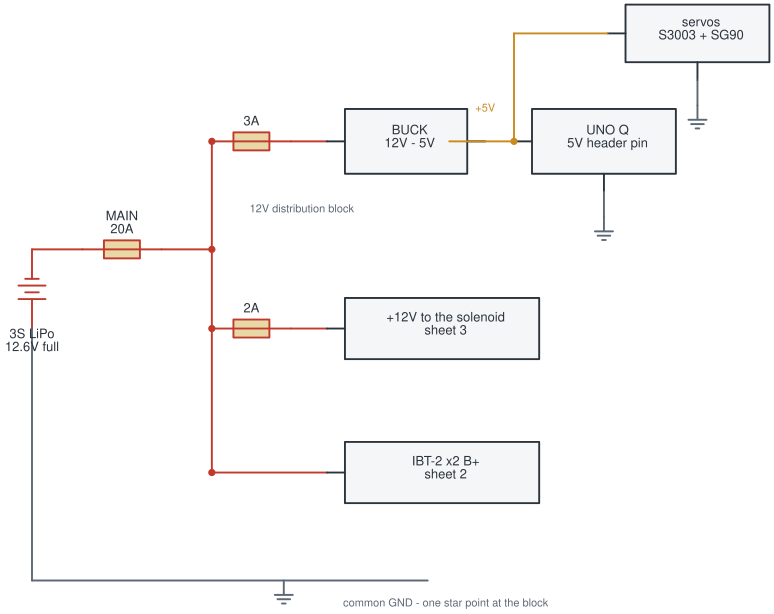
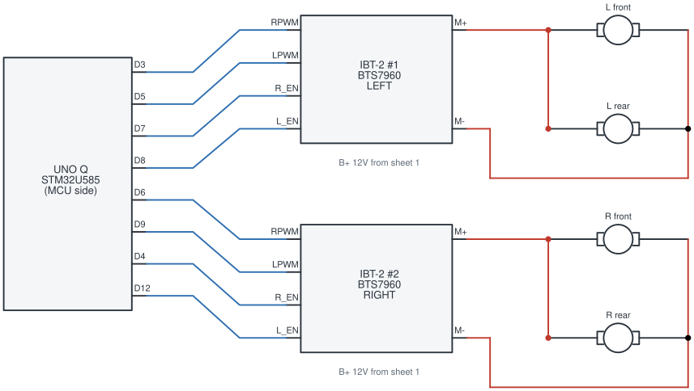
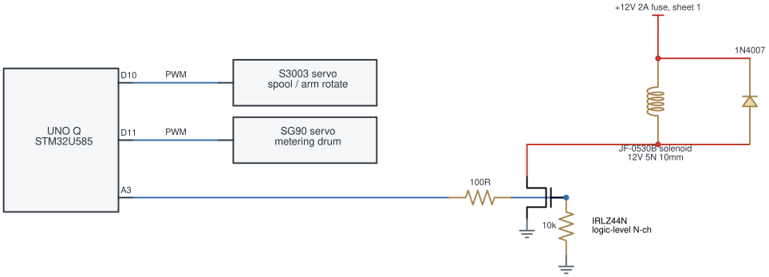
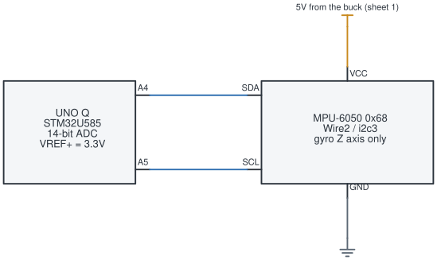

Farm Robot · as built
Seeding robot for the Arduino Physical AI Challenge India 2026, built on the Arduino UNO Q. Four sheets: power distribution, drive, seeder, and the gyro.
Every branch has its own fuse, sized to its own wire. All power branches are 1 mm² (~17 AWG) stranded and soldered.

Fuse for the fault current, gauge for the running current. On 2026-08-15 the 12 V solenoid feed — a Dupont jumper — shorted while the battery was being moved and caught fire. The 20 A main fuse never blew, because a 20 A fuse cannot protect a wire that opens at about 1.5 A: the wire becomes the fuse. Nothing was electrically wrong. The solenoid had worked for days, and the diode and MOSFET were both fine.
One IBT-2 (BTS7960) per side, two gear motors in parallel across each driver's outputs. Motor supply comes straight off the 12 V block on sheet 1.

D3, D5, D6, D9
only.pinMode() on a PWM pin before
analogWrite() kills PWM on that pin — it outputs about 0 V.Two servos for metering and arm rotation, and one solenoid driven as a low-side switch. Servo power is the 5 V rail on sheet 1; only the signal lines appear here.

Diode orientation. The 1N4007's band (cathode) goes to +12 V. Fitted backwards it is a dead short across the fused branch the moment 12 V appears.
A3 gives no
servo motion at all, which is why the spool and drum are on D10/D11
and A3 was left to drive the MOSFET gate.Servo.detach() / attach() at runtime hangs the MCU,
taking the RouterBridge link down with it.10k gate-to-source pulldown holds the coil off while A3
floats during MCU reset.D13 is reserved as the second solenoid's gate for when that punch is fitted.An MPU-6050 on Wire2, used for its Z-axis gyro alone. VCC is the
5 V rail from the buck; the module runs its own regulator, so its
SDA/SCL idle at 3.3 V rather than 5 V — which matters,
because the UNO Q's analog pins are not 5 V tolerant. Worth confirming with
a meter on the bus before trusting it.

The header pins labelled SDA/SCL do not work for I²C.
On this core the board overlay hands D20/D21 to USART3 and leaves
i2c2 disabled, so Wire.begin() succeeds, every transfer fails, and a
bus scan finds nothing however correct the wiring is. Wire2 (i2c3) on
A4/A5 is the only solderable I²C on the board. The pads still work as plain
GPIO, so a pin test passes and misleads.
BATT_PRESENT 0;
getBattery answers present:false rather than reporting a floating
pin, and runs must pass nobatt), gate sense
(GATE_SENSE 0, since an analogRead on A5 re-muxes the pad and would
kill the bus mid-run), and motor current sense
(CURRENT_SENSE 0, never wired). An ADS1115 over I²C would
restore all three without needing a free analog pin.